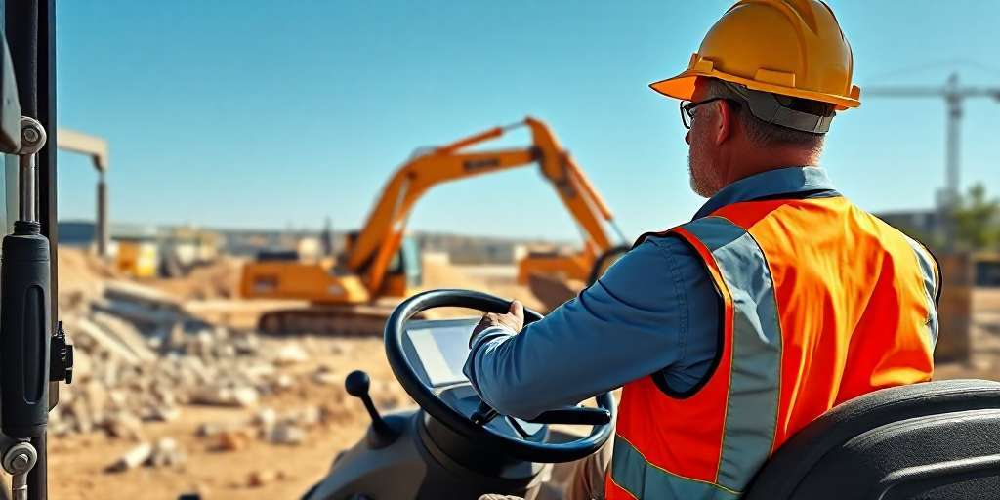

Misión
Facilitar el acceso a maquinaria pesada con operadores certificados para que cada obra avance con seguridad y sin inversiones innecesarias.
LogicTrans nació hace más de diez años cuando un grupo de operadores de maquinaria pesada notó que muchas constructoras compraban equipos que luego usaban pocos meses al año. Decidimos ofrecer otra opción: alquilar la máquina con quien mejor sabe manejarla.
Hoy atendemos a constructoras, contratistas y urbanizadoras en todo el país, con una flota de 60 equipos y un equipo humano que conoce el terreno salvadoreño.
Nos diferencia una idea simple: entregar el equipo en buen estado, a tiempo y con un operador certificado, con costos claros desde la cotización.
Facilitar el acceso a maquinaria pesada con operadores certificados para que cada obra avance con seguridad y sin inversiones innecesarias.
Ser la empresa de alquiler de maquinaria con operador más confiable de Centroamérica.

Todos nuestros motoristas cuentan con certificación, años de experiencia en obra y capacitación continua en seguridad.
Antes de asignarlos a un cliente, practican con el equipo que manejarán y repasan los protocolos de trabajo en altura, pendientes y cercanía de personas.
Atendemos obras en San Salvador, La Libertad, Santa Ana, San Miguel, Sonsonate y La Paz, con posibilidad de llegar a otros departamentos según el proyecto.
Cuéntanos tus necesidades y te respondemos en menos de 24 horas.
Solicitar cotización